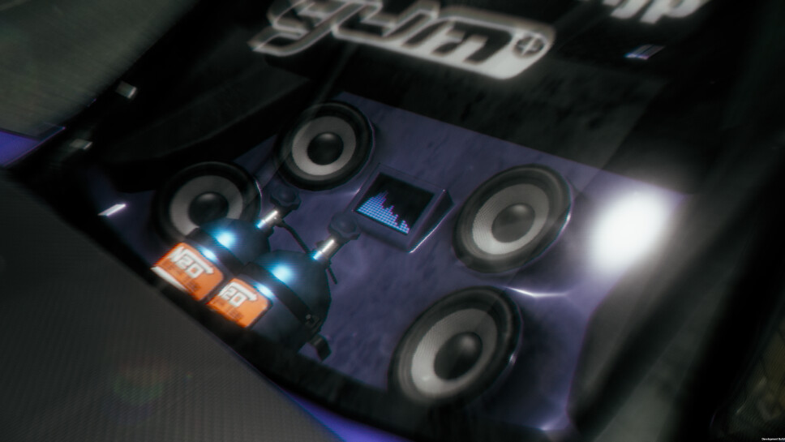
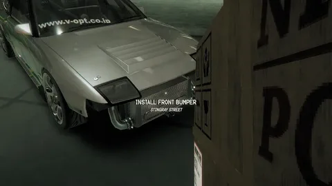

НАСТРОЙКА АВТОМОБИЛЯ
Тюнинг
Одна из главных особенностей NIGHT-RUNNERS: PROLOGUE.

Детали и настройка
В игре тюнинг разделён на несколько направлений. Можно менять внешний вид машины, колёса, салон и настройки управления.
Ненужную деталь можно снять, положить на хранение, продать или установить на другой подходящий автомобиль.

Основные категории
Двигатель
Детали, связанные с мощностью и работой двигателя.
Колёса
Диски и другие элементы колёс автомобиля.
Кузов
Внешние детали, с помощью которых меняется вид автомобиля.
Салон
Изменения различных элементов внутри автомобиля.
Управление
Компоненты и настройки, которые влияют на поведение машины.
Обслуживание
Состояние двигателя также важно: машину приходится обслуживать.